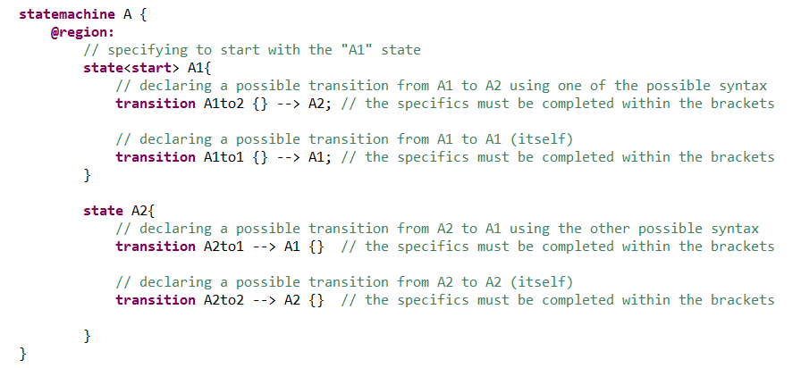
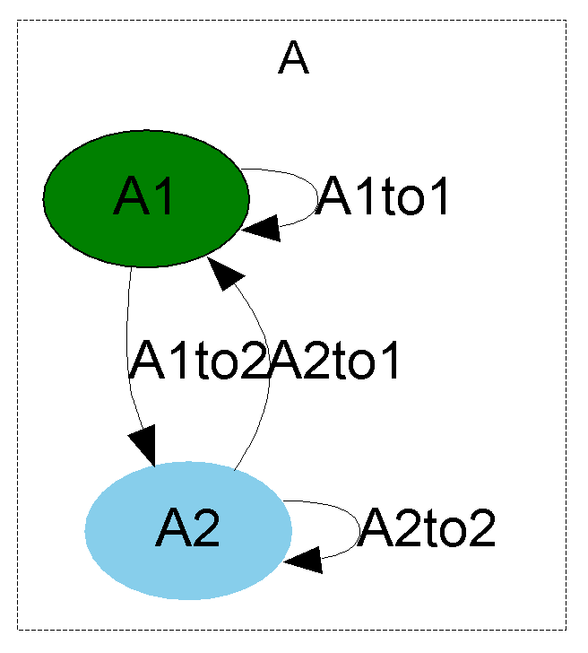

This kind of state is the most simple. We must not define any sub-state within its body and the parent state-machine can have this state as its current state at any evaluation step.
What's most important about simple states are the transitions. Transitions define the relationships between this state and the other states of the same parent statemachine (or parent composite state).
To define a transition within a given state body, we must give it a name and a target (indicated by the characters "-->"). In the following example, we can see possible syntaxes :
Graph of the statemachine "A", generated by Diversity from the code defining "A" :
